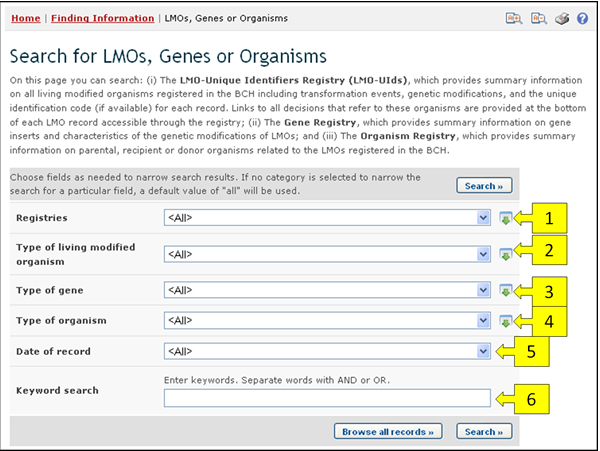

URL: http://bch.cbd.int/database/organisms/
La Secretaría mantiene tres clases de directorios en el CIISB para orientar a los usuarios en la localización de información relativa a OVM como sigue:
-
Directorio de OVM;
-
Directorio de Genes; y
-
Directorio de Organismos.
Cada uno de estos directorios contiene registros con información sobre OVM, Genes y Organismos. Pueden ser accedidos desde la página de búsqueda de información sobre OVM, Genes, u Organismos, que se puede acceder desde el menú desplegable Búsqueda de información en la barra de navegación, desde el enlace en el menú de la izquierda de la página Búsqueda de Información o en el enlace OVM, Genes u Organismos en el texto de dicha página.
Estos directorios pueden ser accedidos desde las páginas de búsqueda eexplicadas en esta sección o también pueden ser usados en forma de Información Compilada, lo cual es descripto en “Información Compilada”.

En la página de búsqueda de OVM, Genes u Organismos hay varios campos de criterios de búsqueda:
-
Registros: Campo de lista de selección para seleccionar los registros en los que se quiere buscar información. Esto permite al usuario seleccionar que tipos de información (OVM, genes u organismos) se incluirán en los resultados.
-
Tipo de Organismo Vivo: Campo de criterio adicional de búsqueda para agregar criterios relacionados a OVM para refinar los resultados de la búsqueda. Sólo registros que contengan o hagan referencia al OVM indicado serán encontrados. Al seleccionar ítems en esta lista puede hacer aparecer los siguientes campos:
-
Identificador Exclusivo: Campo de lista de selección para especificar el identificador exclusivo del OVM.
-
Identidad de OVM: Campo de palabra clave para la búsqueda de palabras claves en la parte identificatoria de los registros de OVM.
-
Técnica: Lista de selección para refinar los resultados de la búsqueda limitándola a aquellos que coincidan con las técnicas seleccionadas.
-
-
Tipo de Gen: Campo de criterio de búsqueda adicional para agregar más criterios relacionados a genes para refinar la búsqueda. Sólo se encontrarán registros que contengan o hagan referencia al criterio de gen especificado.
-
Gen: Lista de selección para seleccionar un nombre de gen específico.
-
Rasgos introducidos o modificados: Lista de selección para acotar la búsqueda a registros que coincidan con las opciones seleccionadas.
-
-
Tipo de Organismo: Campo de criterio de búsqueda adicional para agregar criterios relacionados a organismos para refinar la búsqueda. Sólo se encontrarán registros que contengan o hagan referencia al criterio de organismo especificado. Al seleccionar ítems de esta lista podrá hacer aparecer lo siguientes campos:
-
Organismo Parental (nombre común): Lista de selección para elegir un Organismo por su nombre común.
-
Organismo Parental (nombre cientiífico): Lista de selección para elegir un Organismo por su nombre científico.
-
Vea “cómo usar las páginas de búsqueda” para aprender sobre distintos tipos de campos y su forma de operar.
